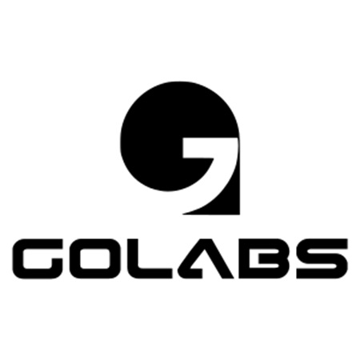

| Tarih | 08.07.2026 | E-Posta | info@golabstek.com |
| Referans | Serdar Çelik | Şirket | Golabs A.Ş. |
| Kime | Ordinat Mühendislik | Konu | Golabs ERP Sistemi |
Sayın Serdar Çelik,
Firmamızdan talep etmiş olduğunuz ilgili fiyat teklifimiz aşağıda belirtilmiştir. Firmamızdan teklif alarak göstermiş olduğunuz ilgi ve güvene teşekkür eder, çalışmalarınızda başarılar dileriz.
Saygılarımızla, Murat AKDOĞAN
| No. | Miktar | Ürün-Hizmet Açıklaması | Birim Fiyat (TL) | Toplam Fiyat (TL) |
|---|---|---|---|---|
| 1 | 1 | Golabs ERP - Profesyonel Paket (Kurulum) - Proje, İş Emri, Servis, Hakediş, Onay ve WhatsApp Modülleri dahil tek seferlik kurulum bedeli. | 300.000 ₺ | 300.000 ₺ |
| 2 | 1 | Yıllık Kullanım, Bakım ve Destek Bedeli - Bulut sunucu, barındırma, sürüm güncellemeleri ve uzaktan destek hizmetleri. | 50.000 ₺ | 50.000 ₺ |
| KDV Hariç Toplam | 350.000 ₺ |
(Not: Paket içerikleri ve detaylı kapsam EK-1'de yer almaktadır.)
TESLİM SÜRESİ: Ürünün teslim süresi sipariş onayına ve avans ödemesini müteakip 20 iş günüdür.
ÖDEME ŞEKLİ ve DİĞER HUSUSLAR
| Şirket Bilgileri | Vergi No / Vergi Dairesi | IBAN NO |
|---|---|---|
| GOLABS TEKNOLOJİ ARGE YAZILIM MAKİNA İMALAT İTHALAT İHRACAT SANAYİ VE TİCARET ANONİM ŞİRKETİ | 3961635234 (İvedik Vergi Dairesi) | Şube Adı: ANKARA GİRİŞİMCİLİK ŞUBESİ, Hesap No: 2026-0004429, IBAN: TR03 0006 4000 0012 0260 0044 29 |
ONAY (KAŞE / İMZA):
Ordinat Mühendislik’in mekanik tesisat, iklimlendirme, su teknolojileri ve otomasyon alanındaki güçlü altyapısı, çok yönlü operasyonlar gerektirmektedir. Proje-taahhüt işleri, saha servis-bakım hizmetleri, taşeron süreçleri ve malzeme yönetimi gibi farklı dinamiklere sahip olan bu süreçler, etkin ve merkezi bir dijital platform ihtiyacını beraberinde getirir.
Bu süreçlerde iş emri yönetimi, saha formlarının dijitalleşmesi, revizyonlu dokümanların takibi, hakediş-fatura eşleşmeleri ve onay mekanizmalarının anlık ve kesintisiz çalışabilmesi operasyonel verimlilik için kritik öneme sahiptir.
Golabs ERP, Ordinat Mühendislik'in tüm saha, proje, servis-bakım ve taahhüt süreçlerini tek bir dijital merkezde toplayarak, ekipler arası iletişimi ve verimliliği en üst düzeye çıkarmak için tasarlanmıştır.
Ordinat Mühendislik'in çalışma yapısına yönelik yaptığımız analizlerde operasyonel başarıyı ölçeklendirmek için aşağıdaki alanlarda dijital çözümlere ihtiyaç duyulduğu görülmektedir:
Golabs ERP, Ordinat Mühendislik'in ihtiyaçlarına tam uyum sağlayan, modern ve esnek bir SaaS altyapısı sunar.
Müşteri portföyünüzü ve projelerinizi tek bir arayüzden yönetin. Şantiye veya mağaza bazlı alt kırılımlar oluşturarak süreçleri detaylandırın.
Saha ve ofis arasında dijital köprü kurun. İş emirlerini görevlendirerek sahadan fotoğraf, konum ve açıklama girişleri ile sonuçların alınmasını sağlayın.
Servis çağrılarını merkezde toplayın. Arıza onarım, periyodik bakım ve devreye alma süreçlerini cihaz ve müşteri bazlı takip edin.
Tesisat ve taahhüt kapsamındaki "Yeni Yapım", "Tadilat" veya "Planlı Bakım" süreçlerini ayrı kategorilerde, kendilerine has form ve prosedürlerle dijitalleştirin.
Proje planları, sözleşmeler ve tutanakları güvenle saklayın. Gelişmiş versiyonlama sistemi sayesinde daima en güncel çizimlerin ve dokümanların sahaya ulaşmasını garanti edin.
Proje ilerlemelerine dayalı taşeron hakedişlerini yönetin. Gelen ve giden fatura kayıtlarını proje bazlı eşleştirerek finansal görünürlüğü artırın.
Satınalma talepleri, iş emirleri, hakedişler ve maliyet onaylarını dijital hiyerarşiler ile yöneterek bekleme sürelerini ortadan kaldırın.
Sahadaki ustalarınızın veya müşterilerinizin sisteme girmesine gerek kalmadan, iş emirleri ve servis formları direkt ceplerine WhatsApp mesajı olarak düşer. Müşterilerinize "Ekibimiz yola çıktı" veya "Arıza giderildi" gibi otomatik bilgilendirmeler giderek şirketinizin prestijini artırır.
Taşeronlarınıza veya müşterilerinize şifre vermenize ya da program indirtmenize gerek yok. WhatsApp'tan gönderilen tek bir linke tıklayarak; şantiyedeki taşeron işi teslim edebilir, müşteri servis formuna dijital imza atabilir veya yeni bir arıza talebi açabilir. Şantiyede işi hızlandırır, ofise anında rapor düşer.
Tüm açık projeler, devam eden iş emirleri, finansal özetler ve saha performanslarına tek ekrandan kuş bakışı hakim olun.
Büyüyen organizasyonunuza uyum sağlayan paket altyapısı sayesinde sadece kullandığınız modüllere yatırım yapın ve zamanla yeni özellikler ekleyin. Q
Golabs ERP, piyasadaki standart üretim/muhasebe odaklı ERP'lerin hantal yapısından sıyrılarak tamamen saha operasyonu ve taahhüt yönetimine odaklanmıştır. Bizi öne çıkaran özelliklerimiz:
Saha, taahhüt ve servis operasyonlarının tüm modülleriyle entegre yönetildiği, WhatsApp bildirimleri içeren tam kapsamlı çözümdür.
Aşağıdaki maddeler mevcut teklif kapsamının dışındadır, talep halinde ayrıca projelendirilecektir: